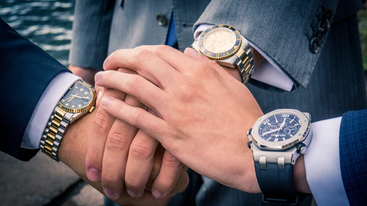
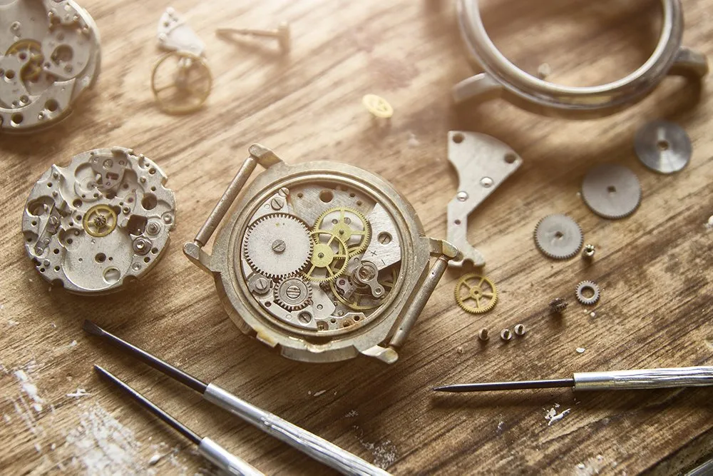

<!doctype html>
<html lang="en">
  <head>
    <meta charset="utf-8">
    <meta name="viewport" content="width=device-width, initial-scale=1">
    <title>MK TIME</title>
    <link href="https://cdn.jsdelivr.net/npm/bootstrap@5.2.3/dist/css/bootstrap.min.css" rel="stylesheet" integrity="sha384-rbsA2VBKQhggwzxH7pPCaAqO46MgnOM80zW1RWuH61DGLwZJEdK2Kadq2F9CUG65" crossorigin="anonymous">
  </head>
  <body>  
	<script src="https://cdn.jsdelivr.net/npm/bootstrap@5.2.3/dist/js/bootstrap.bundle.min.js" integrity="sha384-kenU1KFdBIe4zVF0s0G1M5b4hcpxyD9F7jL+jjXkk+Q2h455rYXK/7HAuoJl+0I4" crossorigin="anonymous"></script>
	<script src="https://cdn.jsdelivr.net/npm/@popperjs/core@2.11.6/dist/umd/popper.min.js" integrity="sha384-oBqDVmMz9ATKxIep9tiCxS/Z9fNfEXiDAYTujMAeBAsjFuCZSmKbSSUnQlmh/jp3" crossorigin="anonymous"></script>
  </body>
</html>
<div class="card-group">
  <div class="card">
    
    <div class="card-body">
      <h5 class="card-title">Our Quality</h5>
      <p class="card-text">Quality time takes on a whole new meaning with our intricately designed watches. From traditional leather straps to stainless steel and rose gold pieces, our gorgeous watches will help keep you on time and in style. Our glamorous wrist essentials are timeless pieces that will you will love to wear day after day with your favorite looks. From dazzling crystal accents and savvy stainless steel, to gold and the timeless leather we only use the highest quality of materials for our brand. Black, white or blue dial with Roman numerals or a diamond encrusted case: you can choose the perfect MK TIME watch to suit your style. From a spellbinding gold watch with a leather band to an extraordinary stainless steel chronograph, you’re sure to find the wristwatch that will be the perfect representation of your elegant taste.

For all those who care as much about the movement of a watch as they do about the elegance of the timepiece, you will be able to choose the perfect calibre that will ensure you a watch that is built to last. The authenticity of a Swiss made automatic watch will delight all those who adore the sophistication of a self‑winding movement, and the perfect watch for all those who strive for precision in every aspect of their life will appreciate the reliance of our MK TIME watches.</p>
    </div>
  </div>
  <div class="card">
    
    <div class="card-body">
      <h5 class="card-title">Our Service</h5>
      <p class="card-text">At one time or another, your watch will need either service or repair in its life. Oftentimes, this will be because your watch is not running well or on time, or it has suffered damage that needs expert repair. 

While the general rule of thumb is getting your watch serviced every two to five years, there are many factors that can contribute to your watch requiring service or repair earlier or more frequently. How often you wear your watch and the conditions in which you are wearing it will affect its everyday functions and wearability ? 

You can get in touch with our experts at any time for help and advice on when to get your watch serviced and also the specific servicing or repair it may need.  As you would expect from a business with over 20 years’ experience as specialist watchmakers, we offer high-quality watch service and repairs. Our specialist in-house watchmakers take pride in craftsmanship and offer bespoke services and repairs for our MK TIME watches. </p>
    </div>
  </div>
  <div class="card">
    
    <div class="card-body">
      <h5 class="card-title">Our City</h5>
      <p class="card-text">All our MK TIME watches are manifactured locally in Edinburgh. We are proud to be Scottish and our pride is also noticeble in our unique design insipired by our Homeland. </p>
    </div>
  </div>
</div>